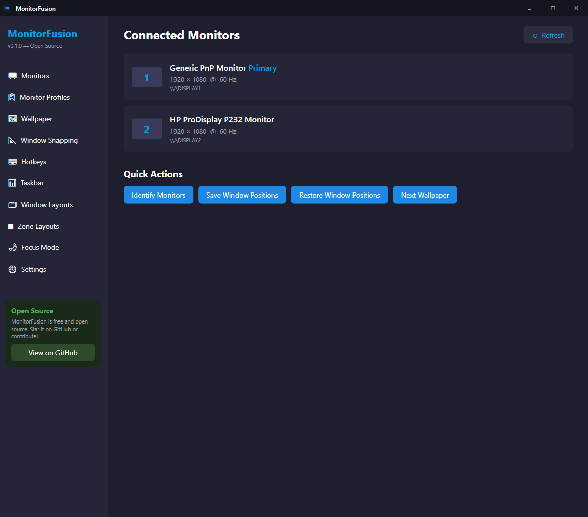
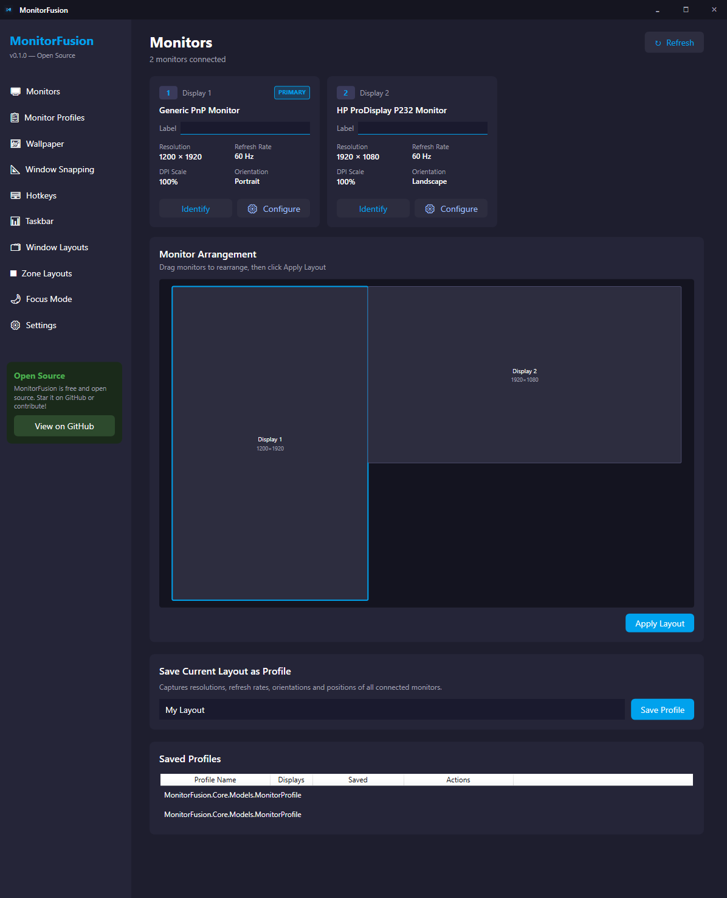
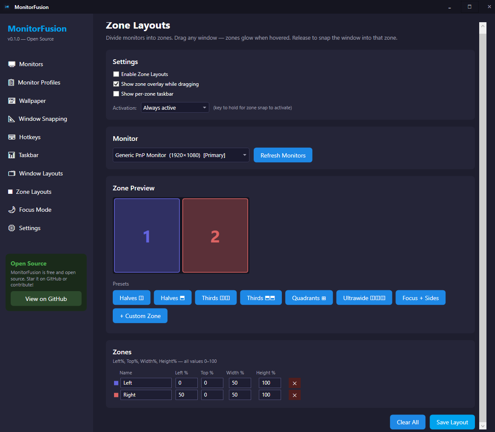
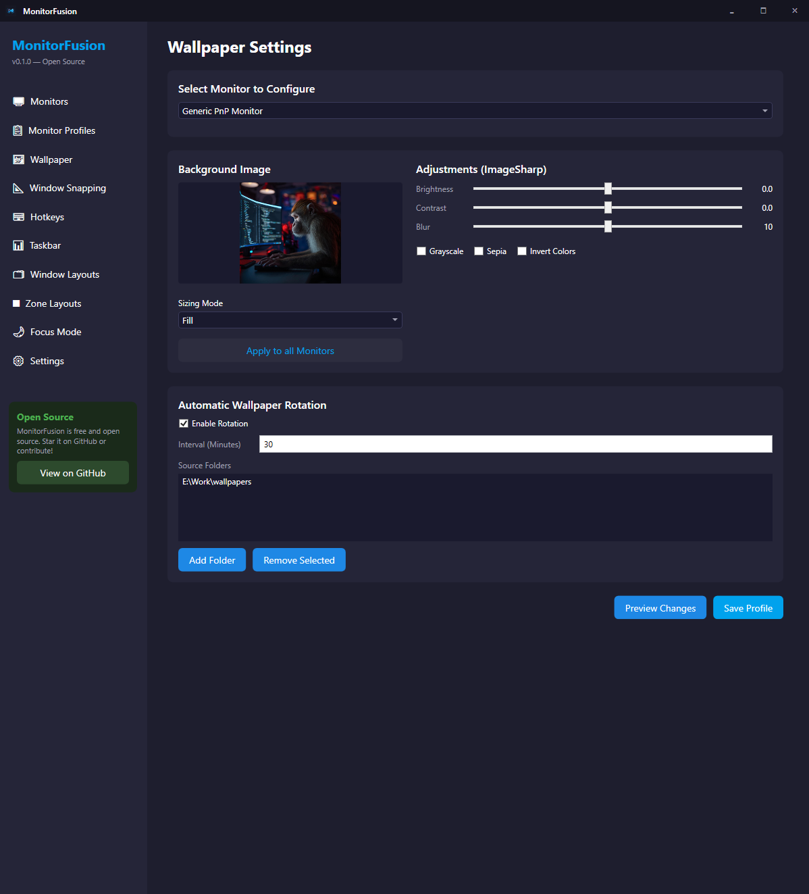
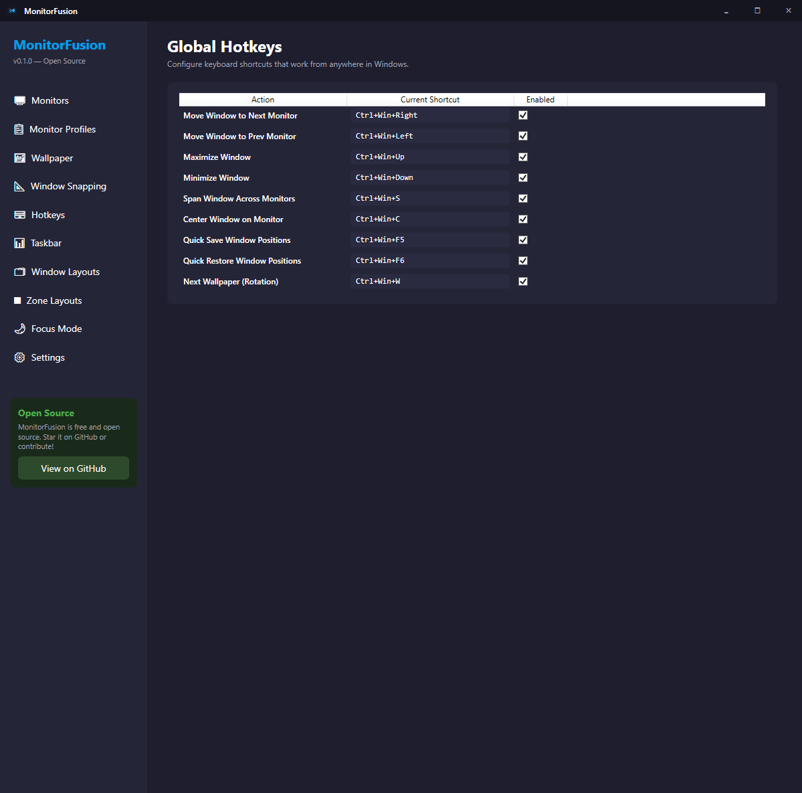
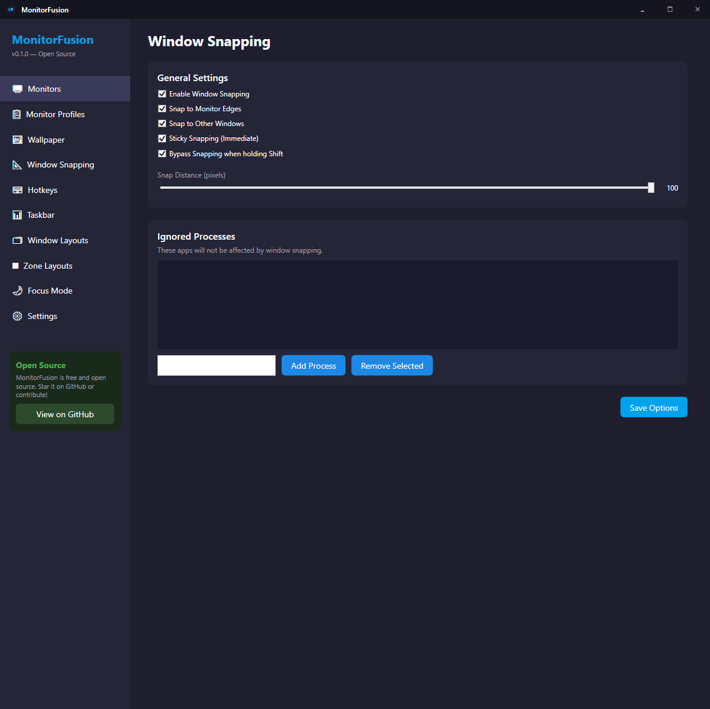
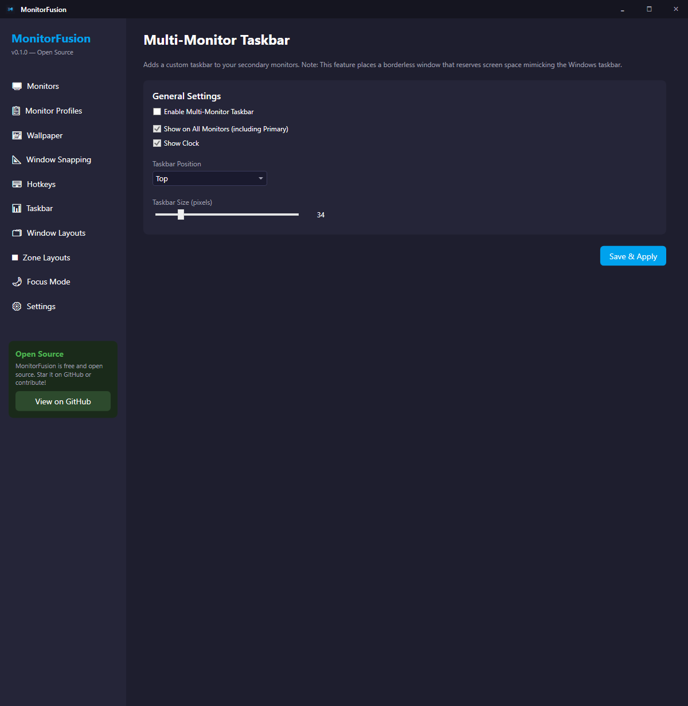
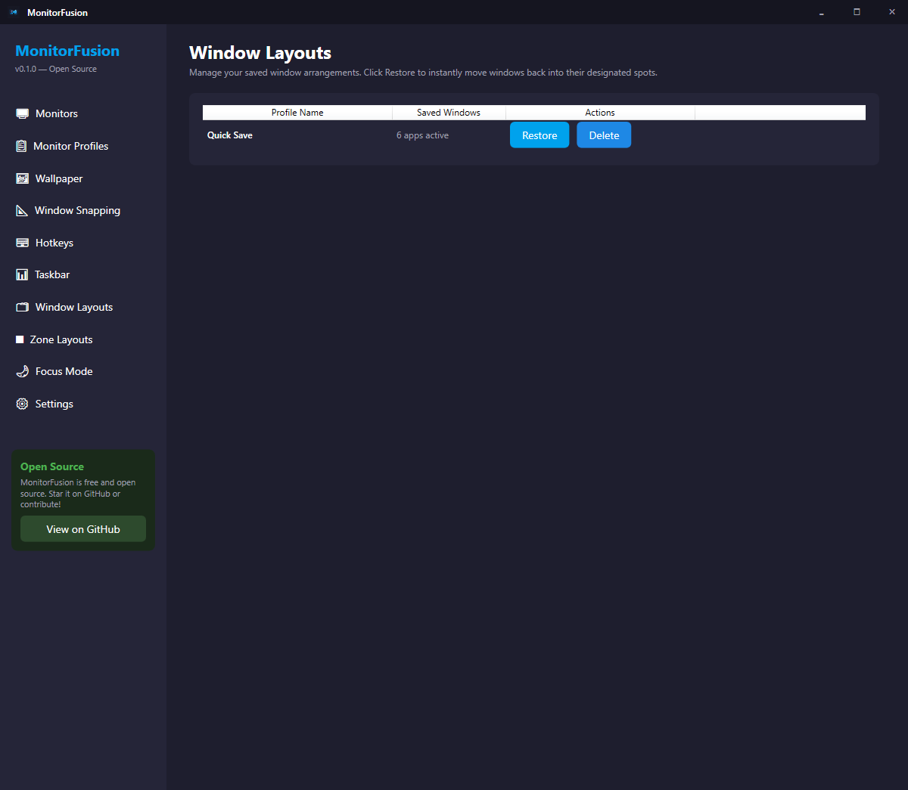
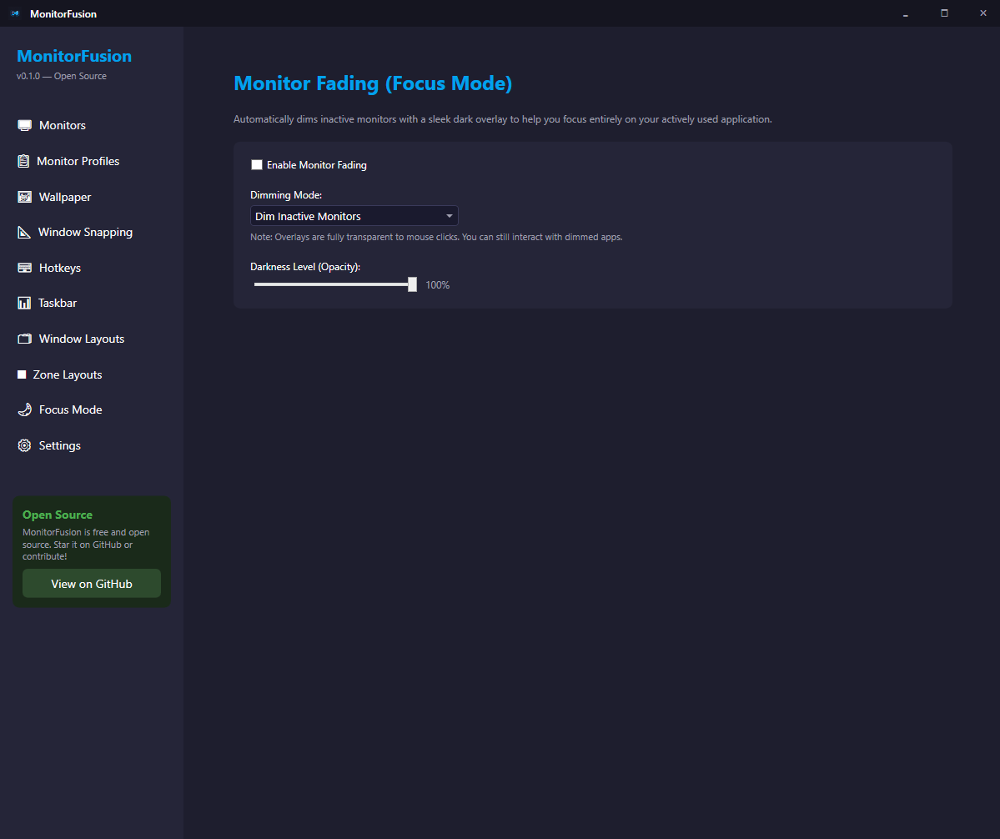
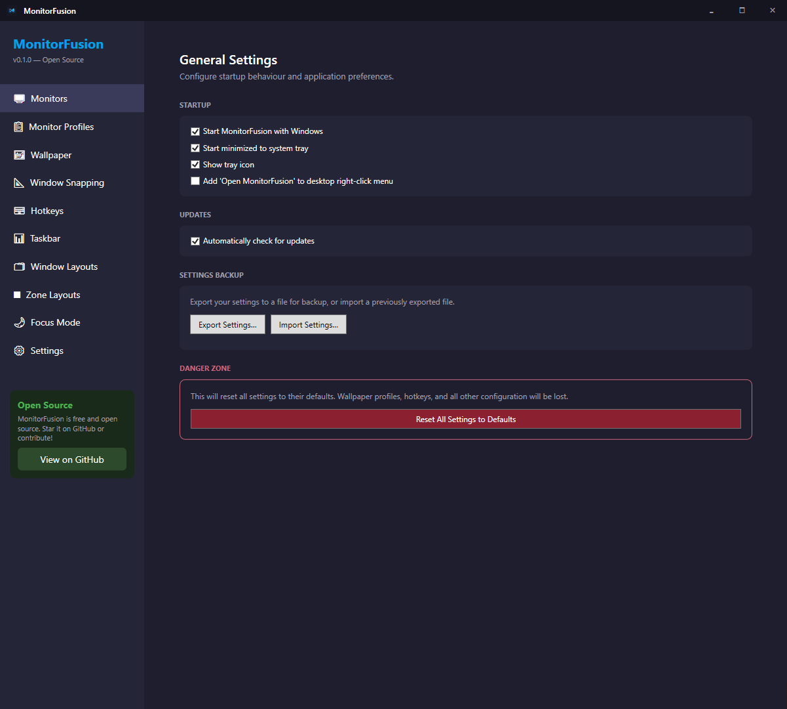

MonitorFusion gives you virtual zone layouts, per-monitor wallpapers, hotkey window movement, and magnetic snapping — all in a lightweight open-source app that lives in your system tray.
Windows 10 / 11 · No prerequisites · ~30 MB · Free & open source
Built with C# and WPF, designed to be fast, lightweight, and extensible.
Divide any monitor into custom zones — halves, thirds, quadrants, ultrawide splits, or fully custom. Drag a window and it snaps to fill the hovered zone. Each zone gets its own slim taskbar.
Set a different wallpaper on each display. Save and switch between named profiles instantly. Thumbnail preview and timed auto-rotation from a folder.
Move any window to the next or previous monitor with a single keypress. Center, maximize, span across monitors. Fully configurable shortcuts.
Windows snap to monitor edges and to each other as you drag. Sticky snapping keeps them aligned during drag. Bypass with Shift. Configure distance and ignored apps.
Save and restore complete monitor configurations — resolution, position, refresh rate, and orientation. Switch between desk and laptop mode instantly.
Save all open window positions and restore them when you reconnect your displays.
Custom taskbar on secondary monitors showing only that screen's windows. Per-zone taskbars when using zone layouts.
Dim inactive monitors so your eyes stay on the active screen. Configurable opacity, toggle with a hotkey.
~30 MB self-contained installer, no .NET prerequisite. Lives quietly in your system tray and uses minimal CPU and RAM.
MonitorFusion is free and open source — no subscriptions, no nag screens.
| Feature | MonitorFusion | DisplayFusion | FancyZones |
|---|---|---|---|
| Zone / virtual monitor splitting | ✅ Free | ✅ Paid | ✅ Free |
| Per-monitor wallpapers | ✅ Free | ✅ Paid | ❌ |
| Multi-monitor taskbar | ✅ Free | ✅ Paid | ❌ |
| Window layout profiles | ✅ Free | ✅ Paid | ❌ |
| Monitor profiles | ✅ Free | ✅ Paid | ❌ |
| Focus mode (dim inactive) | ✅ Free | ✅ Paid | ❌ |
| Open source | ✅ MIT | ❌ | ✅ MIT |
| Price | Free | $29+ / year | Free |
One installer, no prerequisites — .NET is bundled inside.
Click Download Installer above. The setup file is ~30 MB and works on Windows 10 and 11 (64-bit).
MonitorFusion-Setup-x.x.x.exeNo admin rights required. The installer will close any running instance automatically before upgrading.
Pick what you want during setup:
MonitorFusion launches automatically after install. Find it in the system tray or search MonitorFusion in the Start Menu.
A look at every major screen — dark-themed, clean, and purpose-built for multi-monitor power users.










MonitorFusion is in active development. Here's what's shipped and what's next.
Core services, Win32 interop layer, WPF shell, system tray, crash logging, single-instance guard.
Live monitor enumeration, DPI detection, EDID name reading, arrangement diagram, save/restore configurations.
Per-monitor wallpapers, named profiles, image thumbnail preview, rotation from folder on a timer.
Global hotkeys, move windows between monitors, magnetic snap to edges and other windows, sticky snapping, save/restore window position profiles.
Virtual monitor splitting with preset and custom zone layouts. Drag-to-snap with real-time overlay, per-zone taskbar, zone layout editor with live canvas preview.
Custom taskbar on secondary monitors, focus mode dimming for inactive monitors.
Self-contained Windows installer (~30 MB, no .NET required), desktop right-click menu entry, Start Menu shortcuts, clean uninstaller with optional settings removal.
In-app update notifications, GitHub Releases integration, signed installer.
Pin apps to zones. Click to open directly into that zone. Each zone behaves like a dedicated virtual desktop.
MonitorFusion is free and open source. Download the installer, star the repo, or contribute code.